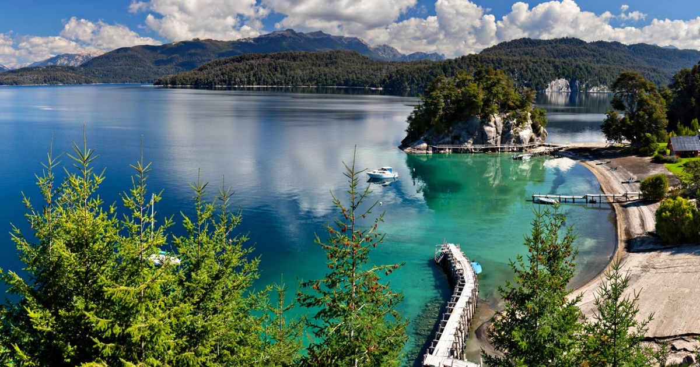

SAN CARLOS DE BARILOCHE



San Carlos de Bariloche (comúnmente llamada Bariloche) es una ciudad en la región de la Patagonia argentina. Limita con Nahuel Huapi, un gran lago glacial rodeado de montañas de los Andes. Bariloche es conocida por su arquitectura al estilo alpino de Suiza y su chocolate, que se vende en tiendas de la calle Mitre, la avenida principal. También es una base popular para el excursionismo y el esquí en las montañas cercanas, y para explorar los alrededores del Distrito de los Lagos. Sus reservas naturales, que incluyen lagos, bosques y montañas, y sus destacados centros de esquí son el principal atractivo. La ciudad ha sido considerada por algunas fuentes como el segundo destino de esquí a nivel mundial y el más grande de América del Sur. Está además en una zona donde se puede observar y estudiar al cóndor andino.